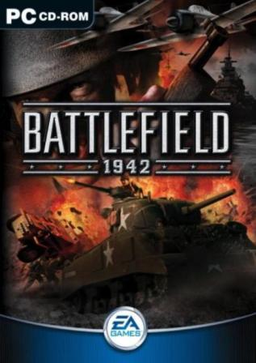

Battlefield 1942
|  | ||||
| Dezvoltator(i): | Digital Illusions CE | |||
| Editor(i): | Electronic Arts (WIN) Aspyr Media (Mac) |
|||
| Serie: | Battlefield | |||
| Compozitor: | Joel Eriksson | |||
| Motor grafic: | Refractor Engine | |||
| Versiune: | Windows: 1.61b (December 2, 2004) Mac OS X: 1.61d (July 21, 2005) |
|||
| Platforma: | Microsoft Windows Macintosh |
|||
| Genuri: | First-person shooter (FPS) | |||
| Moduri: | Single-player, Multiplayer | |||
| Mod de distributie: | CD-ROM | |||
| Cerinte de sistem: | ||||
|
||||